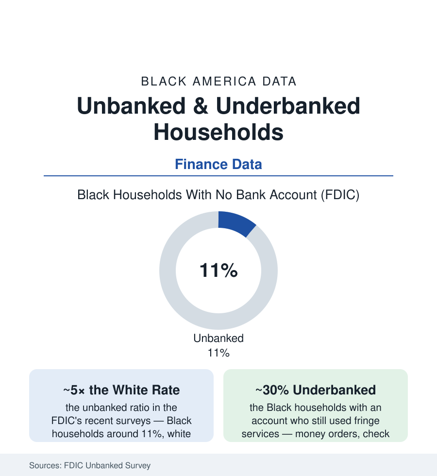

Black Census
Unbanked Households: One in Nine Black Households Outside the Banking System
About 11% of Black households have no bank account at all — five times the white rate — and a third are underbanked. The FDIC's biennial file.

Every other finance file in this section presumes a bank account. The FDIC's biennial census of the unbanked counts the households for whom that presumption fails: about one in nine Black households — roughly eleven percent in the recent survey waves — with no checking or savings account at all, against about two percent of white households; and of those banked, roughly three in ten 'underbanked' households still routing real money through the fringe tier of check cashers and money orders. The account is the economy's front door, and this article reads the door's data.
Who Is Unbanked, and the Reasons on Record
The survey's own reason codes, ranked by the unbanked themselves, discipline the commentary: 'not enough money to meet minimum balance requirements' first (the account priced for a balance the household does not hold), 'don't trust banks' second (the trust item whose historical file this atlas could fill from the Freedman's Bank collapse of 1874 — the Reconstruction-era federal savings bank whose failure wiped out tens of thousands of Black depositors in the documentary record — to the modern fee and closure experiences the qualitative studies log), 'fees too high or unpredictable' and 'banks do not offer the products I need' following, with identification, credit-history, and prior-account screens (the ChexSystems gate in the consumer record) behind. The demographic decomposition in the FDIC tables: the unbanked rate concentrating where the income, education, and family files predict (the single-parent and low-income rows in the twenties and thirties of percent), the rural South and the banking deserts of the cities' south and west sides (the branch-closure maps of the post-merger decades — the Fed's and the NCRC's branch data showing closures concentrated in the same tracts), and the formerly-banked majority inside the number (most unbanked households once had accounts in the survey data — the churn of fees, overdrafts, and closures, not a population that never entered). The overdraft file is the churn's engine in the CFPB's data: the overdraft revenue concentrated on a small share of accounts, the account-closure cascade that follows, the industry's 2021-23 fee reforms measurable in the survey's most recent dip.
The Cost of Cash: What the Fringe Tier Charges
The unbanked household's financial life runs on the price list the consumer data keep: the check-cashing percentage off every paycheck (one to five percent of income at the storefront rates — an annual fee for being paid), the money-order rent payment and its lost proof, the prepaid card's fee stack, the cash economy's exclusions compounding outward (the rental application's account requirement, the employer's direct-deposit default, the utility's deposit for the unbanked, the remittance's wire-store rate in the immigrant file, the stimulus-and-benefit payments' documented delivery failures to the unbanked in the pandemic record — the Treasury's paper-check lag as the system's stress test, published in days of delay per household). The safety line belongs in the same ledger: the cash household's exposure (the savings in the mattress of the ethnographies, the robbery-risk data the public-health file would file under injury), and the credit invisibility (the unbanked household building no banking relationship to graduate from — the ladder's first rung missing, the debt file's expensive tier the only credit on offer). The aggregate arithmetic in the advocates' and the Fed's estimates: the fringe tier's fees extracting billions annually from the households least able to pay them — the poverty premium, itemized.
The Doors Being Built
The response data are unusually concrete: the Bank On movement's certified low-cost accounts (the national standard — no overdraft fees, five-dollar minimums — now offered by hundreds of institutions in the Cities for Financial Empowerment counts, with account-opening data in the millions and the FDIC's latest waves recording the unbanked rate's slow decline), the Black-owned banks' and CDFIs' account drives (the banks article's institutions running explicit unbanked-recruitment missions), the neobank and fintech tier (the app-based accounts' Black customer shares in the platforms' own reporting — the branchless model meeting the desert map, its fee and cash-access structures the consumer data's current grading), the postal-banking proposals' recurring legislative life, and the payment system's own rails (the FedNow and RTP instant networks' potential in the policy analyses — the paycheck available the day it is earned as an overdraft-prevention instrument). The survey's trend line is the scoreboard: the Black unbanked rate falling across the recent waves from the mid-teens toward eleven — progress at the pace of a point or two per survey, against a white rate already at the floor of two. The gap's ratio, five to one, is the number this file leaves on the table for the next survey to grade.
Reading the Unbanked Data
Eleven percent outside the door, thirty percent half-in, and the reasons given in the households' own ranked words — minimums, fees, trust, products: the unbanked file is the finance section's foundation document, the reminder that every other table in this census — the mortgages, the 401(k)s, the portfolios — describes the population the banking system admitted. The FDIC counts the rest every two years. The count is the assignment.
More in Black Census
The Black Population of the United States: Size, Definitions, and Distribution
The Black population of the United States totals 52.8 million — 15.4 percent of the nation. How the Census Bureau defines and counts the population, and where it lives.
Black Median Household Income in the United States
Black median household income stands at $56,490 in the Census Bureau's annual income report — how the figure is measured, how it compares, and what drives it.
The Black Poverty Rate: Levels, Children, and the Long Trend
The official Black poverty rate is 17.1 percent — against 11.1 percent nationally and 7.7 percent for non-Hispanic White Americans. How poverty is measured and what the data show.
Source: Federal Deposit Insurance Corporation, National Survey of Unbanked and Underbanked Households; Federal Reserve Survey of Household Economics and Decisionmaking; CFPB research.